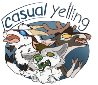
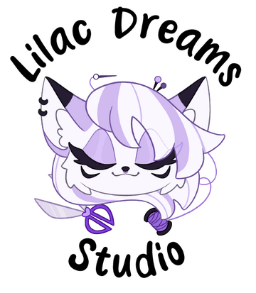

Here you can find all the people I regularly collaborate with
WhitewingsArt
▶ Digital artist
They often help me with design feedback, anatomy supervision, and texturing.
I help them with 3D and IT stuff.
whitewingsart.weebly.com

CasualYelling
▶ Hobbist "Fursuit Maker" Group
I make all the 3D models, complex patterns, and most of the PLA 3D printing.
Our little padded room where we experiment to give life to the fursuits we'd like to see!
casualyelling.weebly.com

LilacDreamsStudio
▶ Fursuit Maker
I make the 3D models for her new head bases and extra parts (antlers, paws, etc), as well as some of the accessories.
Every day a new species, pushing me to model different animals. Apparently, there are more species than just deers.
lilacdreamstudio.carrd.co

StuffedTailsFursuits
▶ Fursuit Maker
I make the 3D models for some of her horns, antlers and accessories.
Always a source of new challenges and projects full of awesome details.
stuffedtailsfursuits.com